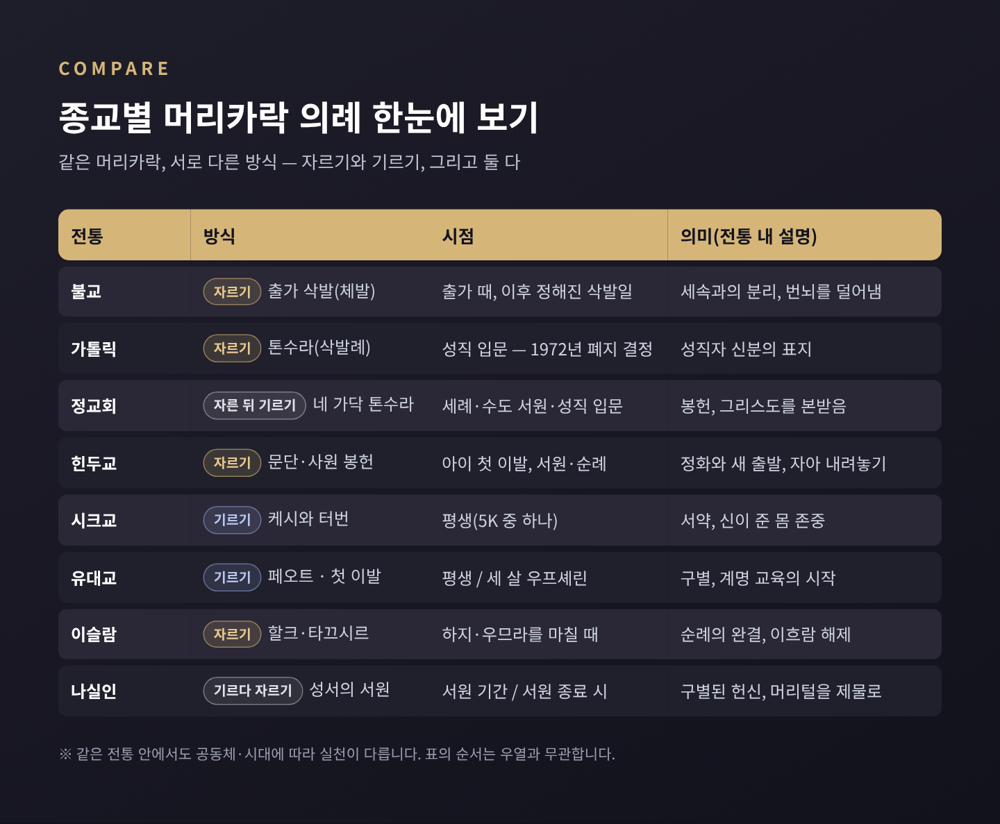
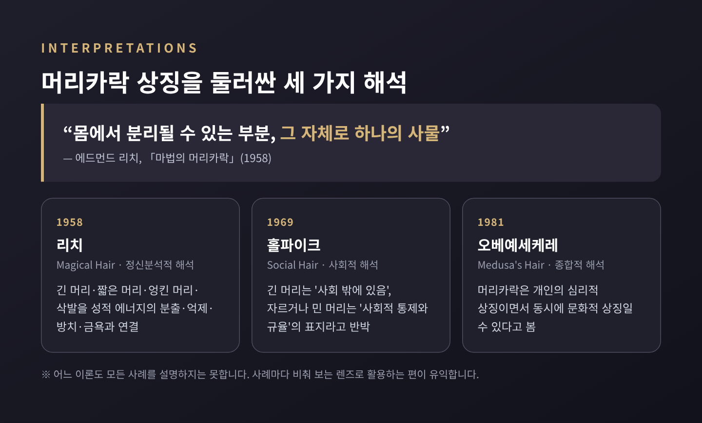

머리카락의 비교종교학 — 삭발과 기르기는 왜 신앙의 표지가 되었을까

오늘은 여러 종교가 머리카락을 어떻게 다뤄 왔는지 비교해 보려 합니다. 어떤 전통은 머리를 밀어 신앙을 드러내고, 어떤 전통은 평생 자르지 않음으로써 같은 일을 합니다. 특정 신앙의 옳고 그름이 아니라, 같은 몸의 일부가 왜 정반대 방식으로 신성한 표지가 되었는지를 종교학의 눈으로 살펴봅니다.
핵심만 먼저 추려 보겠습니다.
- 불교·가톨릭(과거)·이슬람 순례는 머리를 잘라 세속과의 분리, 의례의 완결을 표시합니다.
- 시크교·유대교 일부 전통·정교회 성직자는 머리를 길러 서약과 헌신을 드러냅니다.
- 인류학은 머리카락이 '몸에서 떼어낼 수 있고 다시 자라는' 독특한 재료라서 이런 상징이 되기 쉽다고 봅니다. 다만 해석은 학자마다 갈립니다.
■ 머리카락은 왜 의례의 재료가 되었을까
머리카락은 몸의 일부입니다. 그런데 잘라내도 아프지 않고, 시간이 지나면 다시 자랍니다.
인류학자 에드먼드 리치(Edmund Leach)는 1958년 논문 「마법의 머리카락(Magical Hair)」에서 이 점을 짚었습니다. 그는 머리카락을 "몸에서 분리될 수 있는 부분", 곧 "그 자체로 하나의 사물"이라고 표현했습니다. 몸에 속하면서도 몸 밖으로 떨어져 나갈 수 있다는 뜻입니다.
이 성질 덕분에 머리카락은 바칠 수 있는 제물이 됩니다. 남에게 보이는 자리에 있으니 소속을 알리는 표지도 됩니다. 자르는 순간이 분명하니 '이전'과 '이후'를 가르는 경계선 역할도 합니다.

■ 자르는 전통 ① 불교의 출가 삭발
불교 전승에서 싯다르타는 성을 떠난 뒤 아노마 강을 건너 강가에서 스스로 머리를 잘랐습니다. 왕자의 옷도 벗어 마부에게 돌려보냈습니다. 머리카락과 옷을 함께 내려놓는 장면은 왕족의 삶과 결별했다는 뜻으로 읽힙니다.
출가자의 삭발(체발)은 율장에 규정으로 남아 있습니다. 팔리 율장 『쭐라왁가』는 머리를 길게 기르지 말라고 하며, "두 달 자란 것 또는 두 손가락 폭"까지만 허용합니다. 주석서는 이를 두 달마다, 혹은 두 손가락 폭이 되면 깎으라는 뜻으로 풉니다.
규정이 생긴 계기도 전해집니다. 머리를 길게 기른 비구들을 두고 재가자들이 "감각적 쾌락을 즐기는 재가자 같다"고 비판했다는 일화입니다. 삭발은 곧 세속의 관습 밖에서 산다는 표시였던 셈입니다.
한국 사찰에도 정해진 삭발일이 있습니다. 한 보도에 따르면 산사의 스님들은 매달 보름과 그믐, 한 달에 두 번 머리를 깎고, 그날은 찰밥을 특별식으로 냅니다. 다만 한 달에 세 번 삭발일을 두는 암자의 사례도 있어, 주기는 사찰마다 다르다고 보는 편이 정확합니다. 불교에서 머리카락은 번뇌와 잡념에 비유되기에, 삭발에는 속세의 때를 씻고 무소유와 평등을 지키겠다는 뜻이 담깁니다.
■ 자르는 전통 ② 가톨릭 톤수라, 그리고 1972년
톤수라(tonsure)는 라틴어로 '깎음'이라는 뜻입니다. 가톨릭에서는 정수리를 둥글게 밀어 머리띠 같은 테만 남기는 로마식 '코로나'가 대표적이었습니다.
형태를 두고 논쟁이 벌어진 적도 있습니다. 7세기 영국에서는 귀에서 귀까지 앞머리를 미는 켈트식과 로마식이 맞섰습니다. 664년 휘트비 교회회의는 부활절 날짜 계산과 함께 수도자의 삭발 형태를 다뤘고, 결국 로마식을 택했습니다. 머리 모양 하나가 어느 교회 전통에 속하는지를 가르는 문제였던 것입니다.
예전에는 성직자가 되는 첫걸음이 머리를 깎는 '첫 삭발례'였습니다. 지금은 그렇지 않습니다. 교황 바오로 6세는 1972년 8월 15일 자의교서 『몇 가지 직무(Ministeria quaedam)』를 공포했고, 이 문서는 1973년 1월 1일부터 효력을 가졌습니다. 첫 조항은 "첫 삭발례는 더 이상 수여하지 않는다. 성직자 신분으로의 입문은 부제품과 결합된다"입니다. 삭발이 맡던 '문턱'의 역할을 서품이 넘겨받은 것입니다.
■ 기르는 전통 ① 시크교의 케시와 터번
시크교는 정반대 길을 걷습니다. 케시(Kesh)는 머리카락과 수염을 자르지 않고 자연 그대로 기르는 것입니다.
1699년 구루 고빈드 싱은 칼사 공동체를 세우며 입문 의례에서 다섯 가지 표지, 이른바 5K를 정했습니다. 케시(자르지 않은 머리), 캉가(나무 빗), 카라(강철 팔찌), 키르판(단검), 카체라(속바지)입니다. 캉가로 하루 두 번 머리를 빗어 정수리에 묶고, 그 위를 터번(다스타르)으로 감쌉니다.
하버드 다원주의 프로젝트는 자르지 않은 머리를 몸과 영혼을 온전히 신에게 바친다는 서약, 그리고 자아를 구루에게 내어맡기는 표시로 설명합니다. 신이 준 몸을 있는 그대로 존중한다는 해석도 널리 공유됩니다. 여성도 같은 서약을 지키며 흔히 긴 스카프를 씁니다. 여기서 기르기는 꾸밈이 아니라, 손대지 않음으로써 지키는 약속입니다.
■ 기르는 전통 ② 유대교의 페오트와 세 살의 첫 이발
유대교의 근거는 레위기 19장 27절입니다. "너희 머리 가를 둥글게 깎지 말며 수염 가를 손상하지 말라." '가'로 옮긴 히브리어 페아(pe'a)는 '모서리'라는 뜻이고, 여기서 관자놀이 머리 페오트가 나왔습니다.
해석의 폭은 넓습니다. 탈무드는 이 부위를 귀 앞, 광대뼈 아래까지의 머리로 이해했습니다. 12세기 마이모니데스는 이 금지를 이방 사제의 관습과 구별하려는 뜻으로 보았습니다. 전통적으로는 면도날로 완전히 밀어내는 것을 금한다고 해석하기에, 구레나룻을 완전히 없애지만 않으면 된다는 입장부터 하시디즘의 길게 늘어뜨린 곱슬 페오트까지 실천이 다양합니다.
세 살 첫 이발 '우프셰린'도 흥미롭습니다. 일부 공동체는 남자아이의 머리를 세 살까지 자르지 않습니다. 레위기 19장 23절의 '오를라'(심은 나무의 열매를 첫 3년간 먹지 않는 규정)와, 사람을 나무에 빗댄 신명기 20장 19절을 연결한 해석입니다. 첫 이발 때 친지들이 한 가위씩 자르되 페오트는 남기고, 이날부터 키파를 쓰고 히브리 알파벳을 배우기 시작합니다. 기록상 16세기 인물 아리잘의 제자 하임 비탈의 글에 처음 나타나며, 주요 법전에는 없는 관습이라 의무는 아닙니다.
■ 네 가닥만 자르고 그 뒤로는 기르는 정교회
정교회에도 톤수라가 있습니다. 다만 머리를 밀지 않고, 십자 모양으로 네 가닥을 조금 자르는 방식입니다. 세례 때, 수도 서원 때, 성직 입문 때 행해지며, 자른 머리는 다시 자라도록 둡니다. 수도자는 전통적으로 이후 머리와 수염을 자르지 않습니다.
정교회 성직자의 긴 머리와 수염은 이렇게 설명되곤 합니다. 성화 속 그리스도와 성인들이 긴 머리로 그려진다는 점, 그리고 레위기 19장 27절·민수기 6장(나실인)·에스겔 44장 20절 같은 구약 본문입니다. 교회 측 해설은 이를 성직자에게 '권장되는 전통'으로 소개하며, 의무 규정으로 서술하지는 않습니다.
반론도 함께 적어 둡니다. 고린도전서 11장 14절은 남자의 긴 머리를 부끄러움으로 말합니다. 정교회 해설들은 바울이 비판한 것이 길이가 아니라 장식적 머리 모양이었다고 풉니다. 한 해설은 머리를 짧게 하는 로마·시리아 교회도 고대 전통을 어긴 것이 아니라며, 고대의 관행 자체가 다양했다고 덧붙입니다.
■ 기르다가 자르는 서원, 나실인과 삼손
성서의 나실인 서원은 자르기와 기르기를 한 의례 안에 모두 담고 있습니다. 민수기 6장 2절은 "남자나 여자가" 특별한 서원을 하여 자신을 구별할 수 있다고 말합니다. '나실'의 어근도 '구별하다, 성별하다'입니다.
서원 기간에는 세 가지를 지킵니다. 포도와 포도주를 멀리하고, 머리에 삭도를 대지 않으며, 시체를 가까이하지 않습니다. 그리고 서원이 끝나면 회막 문에서 "구별한 머리털을 밀고 그것을 화목제물 밑에 있는 불에" 둡니다(6장 18절). 기르는 동안의 머리카락은 서약의 증거이고, 마지막에 자른 머리카락은 제물이 됩니다.
삼손은 태어날 때부터 평생 나실인이었습니다. 사사기 16장 17절에서 그는 "내 머리에는 삭도를 대지 아니하였나니… 만일 내 머리가 밀리면 내 힘이 내게서 떠나"라고 털어놓습니다. 일곱 가닥이 잘리자 힘을 잃었고, 22절은 "그의 머리털이 밀린 후에 다시 자라기 시작하니라"라고 적습니다. 이 짧은 문장이 이야기의 결말을 예고한다는 점은 오래도록 주목받아 왔습니다.
■ 순례의 끝을 머리로 표시하는 이슬람의 할크와 타끄시르
이슬람의 하지(대순례)와 우므라(소순례)는 머리를 깎는 것으로 마무리됩니다. 머리 전체를 미는 것을 할크, 일부를 자르는 것을 타끄시르라고 합니다.
꾸란 2장 196절은 "제물이 그 장소에 이르기 전에는 머리를 깎지 말라"고 하고, 48장 27절은 머리를 깎거나 짧게 한 채 성원에 드는 모습을 그립니다. 우므라에서는 사파와 마르와 사이를 오가는 의례(사이)를 마친 뒤, 하지에서는 미나에서 제물을 바친 뒤 머리를 깎습니다. 이것을 마쳐야 순례자의 성별 상태인 이흐람의 금지가 대부분 풀립니다.
남성에게는 할크가 더 권장됩니다. 예언자가 머리를 민 이들을 위해 세 번 기도한 뒤에야 자른 이들을 포함했다는 하디스가 근거로 인용됩니다. 여성은 삭발하지 않고 손가락 끝마디 길이 정도만 자릅니다. 최소 범위를 두고는 학파마다 세부 견해가 다릅니다. 불교 출가의 삭발이 '들어감'을 표시한다면, 순례의 삭발은 '마침'을 표시한다는 점이 대조적입니다.
■ 힌두교의 첫 삭발과 티루파티의 머리카락
힌두교의 쭈다까라나, 흔히 문단(Mundan)이라 부르는 의례는 아이의 첫 이발입니다. 열여섯 가지 주요 통과의례(삼스까라) 가운데 하나로, 대개 돌에서 세 살 무렵, 넓게는 일곱 살 이전에 치릅니다. 전통적으로는 머리를 완전히 밀며, 갠지스 같은 성스러운 강가에서 하기도 합니다. 태어나기 전부터 지닌 불순함을 씻고 새로 시작한다는 의미가 붙습니다.
성인의 머리카락 봉헌으로는 남인도 티루말라의 스리 벤카테스와라 사원(티루파티)이 잘 알려져 있습니다. 사원 측 발표를 전한 인도 언론에 따르면 2026년 5월 1일부터 27일까지 124만 3천여 명이 머리를 바쳤습니다. 같은 기간 삭발소에서 일한 이발사는 1,152명이고, 그중 269명이 여성이었습니다. 모인 머리카락은 경매로 판매되어 사원 재원이 됩니다.
신앙의 행위가 거대한 규모의 경제와 맞물려 있다는 점은 양면적으로 읽힙니다. 봉헌이 사원 운영과 공익 사업의 재원이 된다는 설명이 있는 한편, 개인의 서원이 상품이 되는 구조에 대해 다른 시선이 있을 수 있습니다.
■ 여성의 머리 가림은 어떻게 다를까
여성의 경우 자르기보다 '가리기'가 더 자주 쟁점이 됩니다. 2025년 노르웨이 연구자들의 설명에 따르면, 여러 전통에서 여성의 머리카락은 품위·정숙·거룩함과 연결되어 왔습니다.
고린도전서 11장은 기도할 때 여성이 머리를 가리라고 하지만, 지역 관습을 따르라는 권고였다는 해석도 있습니다. 유대교에서는 가장 보수적인 공동체의 기혼 여성이 모자나 스카프, 가발로 머리를 가리며, 대다수 유대인 여성은 그렇지 않습니다. 이슬람에서는 히잡을 쓰는 여성이 많지만, 꾸란 24장 31절이 머리카락을 명시하는지를 두고 해석이 갈리고 실천도 나라와 집단마다 다릅니다. 남성의 머리는 '자르느냐 기르느냐', 여성의 머리는 '보이느냐 가리느냐'로 규범이 나뉘는 경향이 엿보입니다.
■ 세 가지 해석, 학자들은 어떻게 읽었나
종교학과 인류학은 이 현상을 여러 방식으로 설명해 왔습니다.
첫째, 통과의례 이론입니다. 아르놀트 반 헤네프는 1909년 『통과의례』에서 의례를 분리–전이–통합의 세 단계로 나눴습니다. 출가자의 삭발, 첫 삭발례, 아이의 첫 이발은 모두 이전 상태에서 떨어져 나오는 '분리'의 순간을 몸에 새깁니다. 순례 종료의 삭발은 반대로 일상으로 돌아가는 '통합'의 표지에 가깝습니다.
둘째, 리치의 정신분석적 해석입니다. 그는 인도·스리랑카 자료를 바탕으로 긴 머리·짧은 머리·엉킨 머리·삭발을 성적 에너지의 분출·억제·방치·금욕과 연결했고, 이 연결이 보편적이라고 보았습니다.
셋째, 홀파이크(C. R. Hallpike)의 사회적 해석입니다. 그는 1969년 「사회적 머리카락(Social Hair)」에서 리치를 반박했습니다. 긴 머리는 '사회 밖에 있음'을, 자르거나 민 머리는 '사회적 통제와 규율'을 뜻한다는 것입니다. 이후 오베예세케레(Obeyesekere)는 『메두사의 머리카락』(1981)에서 머리카락이 개인의 심리적 상징이자 문화적 상징일 수 있다고 보며 두 관점을 잇고자 했습니다.
어느 쪽도 모든 사례를 깔끔하게 설명하지는 못합니다. 그래서 하나의 정답보다는, 사례마다 어느 렌즈가 더 잘 맞는지 비춰 보는 도구로 쓰는 편이 유익합니다.

■ '자르기는 포기, 기르기는 헌신'이라는 구도와 그 예외
지금까지의 사례를 묶으면 하나의 대비가 보입니다. 자르기는 포기와 정화, 분리를 뜻하고, 기르기는 헌신과 서약, 손대지 않음을 뜻한다는 구도입니다.
설명력은 있습니다. 불교 출가와 가톨릭의 옛 첫 삭발례는 앞쪽에, 시크교의 케시와 하시디즘의 페오트는 뒤쪽에 놓입니다.
하지만 예외가 많습니다. 나실인은 기르는 것으로 서약을 지키고, 자르는 것으로 서약을 완성합니다. 정교회 수도자는 삭발례를 받은 뒤 오히려 머리를 기릅니다. 유대교의 우프셰린은 머리를 자르면서도 페오트만은 남깁니다. 이슬람 순례의 삭발은 포기보다 완결과 귀환에 가깝습니다. 한 전통 안에서도 공동체와 시대에 따라 실천이 크게 다르다는 점도 기억해야 합니다.
정리하면 이렇습니다. 머리카락은 몸의 일부이면서 떼어낼 수 있고, 다시 자라며, 누구에게나 보입니다. 그래서 여러 종교는 같은 재료로 정반대의 언어를 만들었습니다.
— 자르든 기르든, 머리카락은 '나는 이제 다르게 살겠다'는 약속을 몸에 적는 방식이었습니다.
종교학은 그 약속의 옳고 그름을 판정하지 않습니다. 다만 그 약속이 얼마나 다양한 모양을 띠는지 보여줄 뿐입니다. 거리에서 삭발한 스님이나 터번을 쓴 시크교인, 긴 페오트의 유대인을 마주친다면, 그 머리카락이 각자의 삶에서 무엇을 약속하고 있는지 한 번쯤 떠올려 보셔도 좋겠습니다.
#머리카락의비교종교학 #종교와머리카락 #삭발의의미 #톤수라 #시크교케시 #페오트 #나실인 #통과의례 #비교종교학